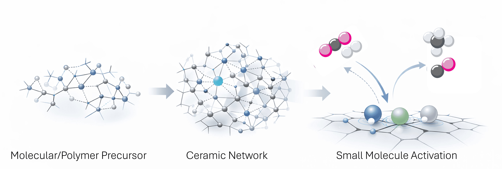
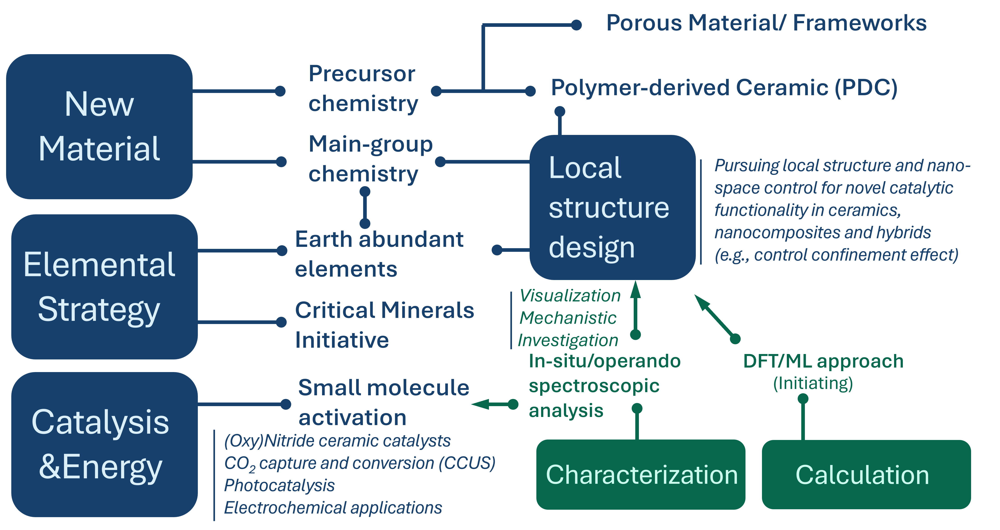

Our work explores precursor-derived ceramic systems with tailored surface chemistry for small-molecule activation.
By integrating synthesis, structural analysis, and first-principles calculations, we aim to understand adsorption mechanisms and structure–reactivity relationships in functional ceramic materials.

Precursor Chemistry for Advanced Materials (PreCAM) Lab explores new material design based on elemental strategy and precursor chemistry. Our research spans precursor-derived ceramics, semiconductors, hybrid materials, and catalytic systems. By integrating materials synthesis, structural and chemical characterization, and Density Functional Theory (DFT)-based analysis, we aim to establish rational structure–composition–function relationships in functional materials.
The lab addresses broad challenges including catalysis, sustainable and low-environmental-impact materials development, and energy- and environment-related material systems. Surface chemistry and small-molecule activation (e.g., CO₂, H₂) represent important research axes within this wider materials framework.

Email: shotaro.tada[at]zmail.iitm.ac.in
Office: KCB 242
Krishna Chivkukula Blook(New Academic Complex 1)
Department of Metallurgical and Materials Engineering
Indian Institute of Technology Madras
Chennai – 600036
Tamil Nadu
INDIA
ORCID:
https://orcid.org/0000-0001-5147-4589
LinkedIn:
www.linkedin.com/in/shotaro-tada-9133aa180